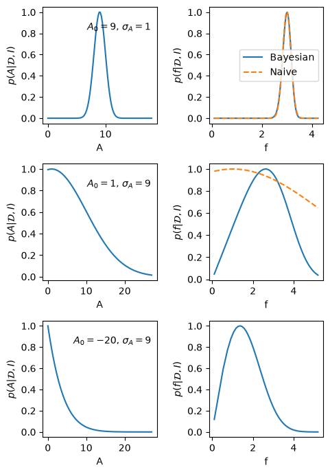

7.3. A useful approximation#
We have seen in Section 7.1 and Section 7.2 how to exactly calculate the probability distribution for a random variable that is a function of other random variables. That is, given distributions for random variables \(X\) and \(Y\), we can find the distribution for \(Z = f(X,Y)\). But it will often be sufficient to approximate PDFs with (uncorrelated) Gaussian distributions, in which case we can anticipate being able to approximate how such distributions combine. Intuitively, if the distributions for \(X\) and \(Y\) are sharply peaked about their means, we expect we can linearize \(f(X,Y)\) and then \(Z\) will also be a Gaussian. Let’s see how this plays out successfully and where it can fail.
If we assume \(X\) and \(Y\) are independent, then in the Gaussian approximation, the distributions for \(X\) and \(Y\) are fully characterized by their means \(\mu_X, \mu_Y\) and variances \(\sigma_X^2, \sigma_Y^2\), respectively. These are given by expectation values (recall Expectation values and moments)
where we have defined the deviations from the mean
and used that \(\delta X\) and \(\delta Y\) are independent zero-mean distributions.
By assumption, we should be able to expand about the means, so for small \(\delta X\) and \(\delta Y\) we Taylor expand (here to second order):
where we use the abbreviations
Let’s first work to linear order (i.e., keep through \(\delta X\) and \(\delta Y\)). Then \(Z\) is a linear combination of Gaussian distributions, hence is itself Gaussian. We can find its mean and variance by using the linearity of expectation values and that the \(\delta X\) and \(\delta Y\) are independent, zero-mean distributions:
Summary
The application of these approximations:
is sometimes called Gaussian error propagation. In fact, these relations apply at this linear order regardless of how the random variables \(X\) and \(Y\) are distributed. Although the above discussion was motivated by assuming they were normally distributed nothing we have done so far actually used that. The derivation does, though, assume that \(X\) and \(Y\) are independent random variables.
Checkpoint question
Why are expectation values linear operations?
Answer
Recall from Expectation values and moments that expectation values are integrals over probability definitions. As such, they inherit linearity from the linearity of integrals.
Let’s apply the formulas in (7.19) to \(Z=X-Y\). For the mean we get \(\mu_Z = \mu_X - \mu_Y\), which is intuitive. For the variance the relevant derivatives are \(f_X = +1\) and \(f_Y = -1\), so we find that
i.e., the familiar result that variances add in quadrature. Since the expansion of \(f\) in this case truncates at linear order, these results are exact.
Example 7.3 (Inferring galactic distances—revisited)
Consider, as a second example, the ratio of two parameters \(Z = X/Y\) that appeared in Example 7.2 (in which we wanted to infer \(d = v/H\)).
Applying (7.19), the mean is
and, with \(f_X = 1/\mu_Y\) and \(f_Y = -\mu_X/\mu_Y^2\), we find for the propagated variance
or
(we can take the square root to get the ratio of standard deviation to mean).
Exercise 7.6 (Linear combination of Gaussians)
Consider \(Z=aX+bY\), with \(a\) and \(b\) constants. Derive a PDF for \(Z\) assuming Gaussian errors in \(X\) and \(Y\) and applying (7.19). Compare with the result for \(X+Y\) from the full convolution of PDFs in Example 7.1.
Exercise 7.7 (Gaussian product of errors)
Consider \(Z=XY\) and derive a PDF for \(Z\) assuming Gaussian errors in \(X\) and \(Y\) and applying (7.19).
What if the first-order approximation is not enough? We can return to (7.17) and (7.18) and keep the second-order terms in (7.16). We find improved formulas:
In this case it is relevant that we assumed independent Gaussian distributions for \(X\) and \(Y\).
Exercise 7.8 (Deriving second-order results)
Derive the results in (7.20). You will need to use that the skewness for a Gaussian distribution is zero and that the kurtosis can be expressed in terms of the variance.
So where can these approximations fail? The first-order approximation can perform poorly for strongly nonlinear transformations (so that higher-order corrections are important), ratios with denominators near zero, or transformations that impose boundaries or produce substantial skewness. The second-order corrections may help, but can also fail completely in some cases. Consider the following example.
Example 7.4 (Taking the square root of a number)
This example was adapted from [SS06].
Assume that the amplitude of a Bragg peak is measured with an uncertainty \(A = A_0 \pm \sigma_A\) from a least-squares fit to experimental data.
The Bragg peak amplitude is proportional to the square of a complex structure function: \(A = |F|^2 \equiv f^2\).
What is \(f = f_0 \pm \sigma_f\)?
If we blindly apply (7.19), we find
But what happens if the best fit gives \(A_0 < 0\), which would not be impossible if we have weak and strongly overlapping peaks. The above equation obviously does not work since \(f_0\) would be a complex number and the variance would be negative.
We have made two mistakes:
The likelihood is not the posterior!
The Gaussian error approximation around the peak does not always work.
Consider first the best fit of the signal peak. It implies that the likelihood can be approximated by
However, the posterior for \(A\) is \(\pdf{A}{{\data},I} \propto \pdf{\data}{A,I} \pdf{A}{I}\) and we should use the fact that we know that \(A \ge 0\).
We will incorporate this information through a simple step-function prior
This implies that the posterior will be a truncated Gaussian, and its maximum will always be above zero.
This also implies that we cannot use the Gaussian error propagation approximation. Instead we will do the proper calculation using the transformation (7.11)
In the end we find the proper Bayesian error propagation given by the PDF
Fig. 7.1 visualizes the difference between the Bayesian and the naive error propagation for a few scenarios. The code to generate these plots is in the hidden cell below.

Fig. 7.1 The left-hand panels show the posterior PDF for the amplitude of a Bragg peak in three different scenarios. The right-hand plots are the corresponding PDFs for the modulus of the structure factor \(f=\sqrt{A}\). The solid lines correspond to a full Bayesian error propagation, while the dashed lines are obtained with the short-cut error propagation. The short-cut approximation works well for the first case, poorly for the second case, and fails completely for the third case where \(A_0 < 0\).#
Solutions to exercises#
Solution to Exercise 7.6 (Linear combination of Gaussians)
The PDF \(\pdf{Z}{I}\) is Gaussian with mean \(\expect{Z} = \mu_Z = a \mu_X + b \mu_Y\) and variance \(\var{Z} = \sigma_Z^2 = a^2\sigma_Z^2 + b^2\sigma_Z^2\), where \(\mu_X,\mu_Y\) and \(\sigma_X^2, \sigma_Y^2\) are the means and variances of \(X\) and \(Y\), respectively.
For \(a=b=1\) this is the same result as in Example 7.1, which should not be surprising since the errors were in fact Gaussian.
Solution to Exercise 7.7 (Gaussian product of errors)
The PDF \(\pdf{Z}{I}\) is Gaussian with mean \(\expect{Z} = \mu_Z = \mu_X \mu_Y\) and variance \(\var{Z} = \sigma_Z^2 = \mu_Y^2 \sigma_X^2 + \mu_X^2 \sigma_Y^2\), where \(\mu_X,\mu_Y\) and \(\sigma_X^2, \sigma_Y^2\) are the means and variances of \(X\) and \(Y\), respectively.
Solution to Exercise 7.8 (Deriving second-order results)
We get the second-order expression for \(\mu_Z\) immediately by applying (7.17) and (7.15).
For the variance, when applying (7.18) we need to remember to apply both the expansion of \(Z\) and the expansion of \(\mu_Z\) to second order. Once squared, there will be expectation values of third-order terms and fourth-order terms; after using independence to factorize terms, any expectation value of an odd power of \(\delta X\) or \(\delta Y\) vanishes for zero-mean Gaussian distributions (mean and skewness are both zero). As before, any expectation value of quadratic terms yields variances, but now we have \(\expect{(\delta X)^4} = 3(\sigma_X^2)^2\) and \(\expect{(\delta Y)^4} = 3(\sigma_Y^2)^2\) for Gaussian distributions. When the dust settles, terms like \(f_{XX} f_{YY}\sigma_X^2 \sigma_Y^2\) will have canceled and the factors work out to reproduce (7.20).